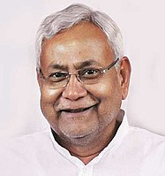
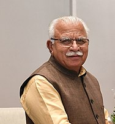

| Sr.No. | State name | Capital name | Chief minister | Governer | ||
|---|---|---|---|---|---|---|
| CM Name | CM image | Governer name | Governer image | |||
| 1. | Andhra Pradesh | Amaravati | Y. S. Jagan Mohan Reddy | |
Biswabhusan Harichandan | |
| 2. | Arunachal Pradesh | Itanagar | Pema Khandu | |
B. D. Mishra | |
| 3. | Assam | Dispur | Himanta Biswa Sarma | |
Jagdish Mukhi | |
| 4. | Bihar | Patna | Nitish Kumar |  | Phagu Chauhan | |
| 5. | Chhattisgarh | Raipur | Bhupesh Baghel | |
Anusuiya Uikey | |
| 6. | Goa | Panaji | Pramod Sawant | |
P. S. Sreedharan Pillai | |
| 7. | Gujarat | Gandhinagar | Bhupendrabhai Patel | |
Acharya Devvrat | |
| 8. | Haryana | Chandigarh | Manohar Lal Khattar |  | Bandaru Dattatreya | |
| 9. | Himachal Pradesh | Shimla | Jai Ram Thakur | |
Rajendra Arlekar | |
| 10. | Jharkhand | Ranchi | Hemant Soren | Ramesh Bais | |
|
| 11. | Karnataka | Bengaluru | Basavaraj Bommai | |
Thawarchand Gehlot | |
| 12 | Kerala | Trivandrum | Pinarayi Vijayan | |
Arif Mohammad Khan | |
| 13 | Madhya Pradesh | Bhopal | Shivraj Singh Chouhan | Mangubhai C. Patel | ||
| 14 | Maharashtra | Mumbai | Eknath Shinde | |
Bhagat Singh Koshyari | |
| 15. | Manipur | Imphal | Nongthombam Biren Singh | |
La. Ganesan | |
| 16. | Meghalaya | Shillong | Conrad Sangma | Satya Pal Malik | |
|
| 17. | Mizoram | Aizawl | Zoramthanga | |
Kambhampati Hari Babu | |
| 18. | Nagaland | Kohima | Neiphiu Rio | Jagdish Mukhi | ||
| 19. | Odisha | Bhubaneswar | Naveen Patnaik | |
Ganeshi Lal | |
| 20. | Punjab | Chandigarh | Bhagwant Mann | |
Banwarilal Purohit | |
| 21. | Rajasthan | Jaipur | Ashok Gehlot | |
Kalraj Mishra | |
| 22. | Sikkim | Gangtok | Prem Singh Tamang | Ganga Prasad | |
|
| 23. | Tamil Nadu | Chennai | M. K. Stalin | |
R. N. Ravi | |
| 24. | Telangana | Hyderabad | Kalvakuntla Chandrasekhar Rao | |
Tamilisai | |
| 25. | Tripura | Agartala | Manik Saha | |
Satyadev Narayan Arya | |
| 26. | Uttar Pradesh | Lucknow | Yogi Adityanath | |
Anandiben Patel | |
| 27. | Uttarakhand | Dehradun | Pushkar Singh Dham | |
Gurmit Singh | |
| 28. | West Bengal | Kolkata | Mamata Banerjee | Jagdeep Dhankhar | ||